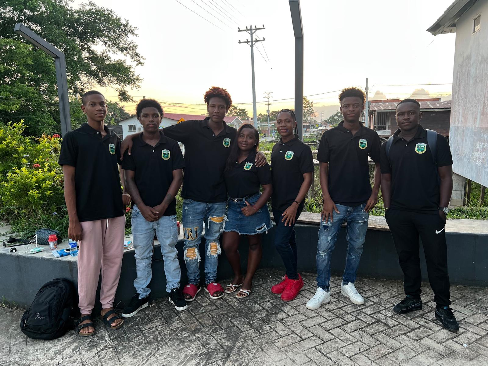
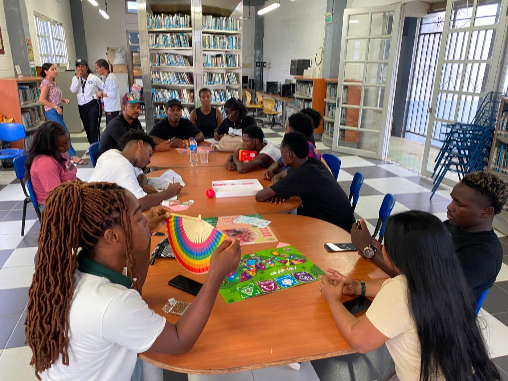
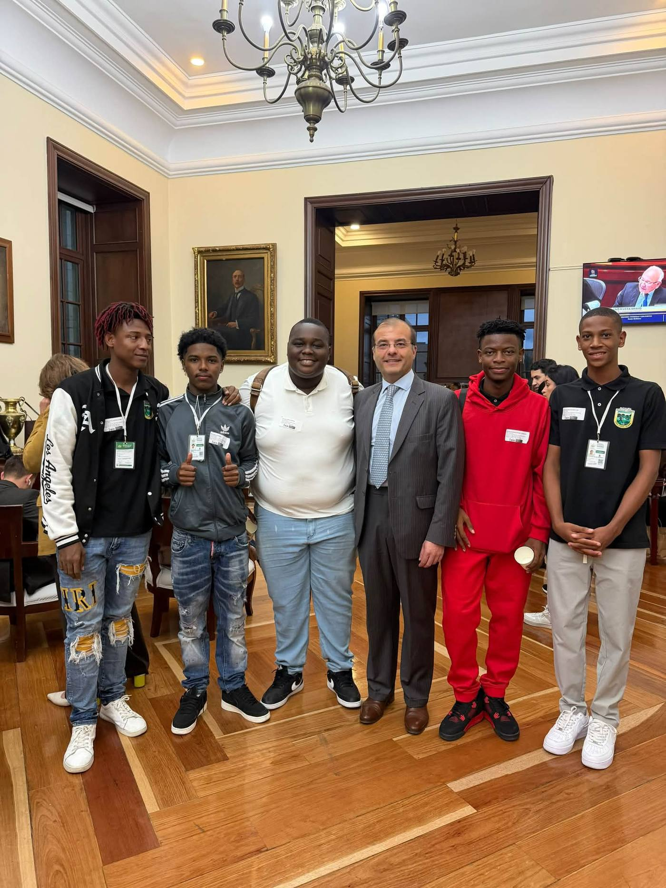
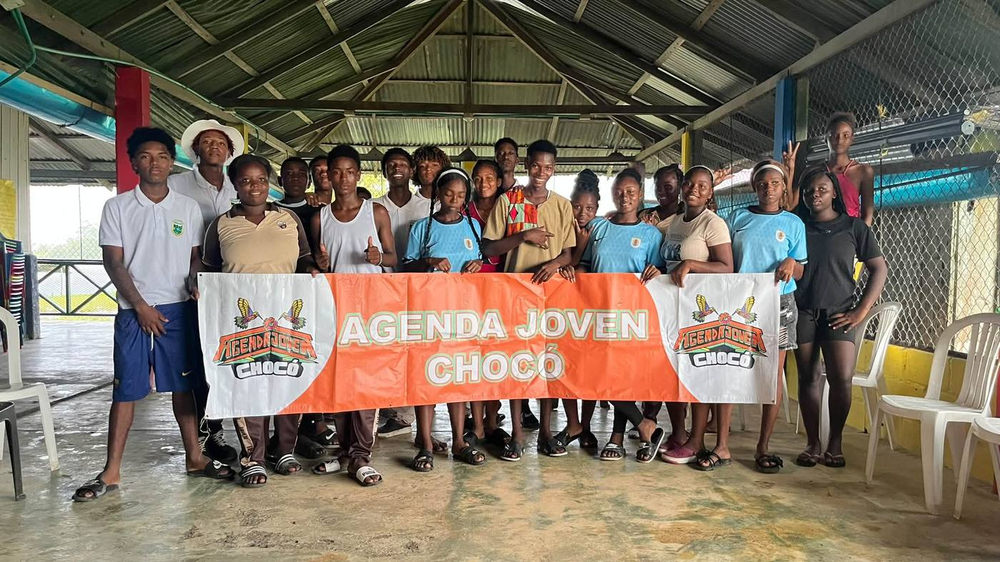
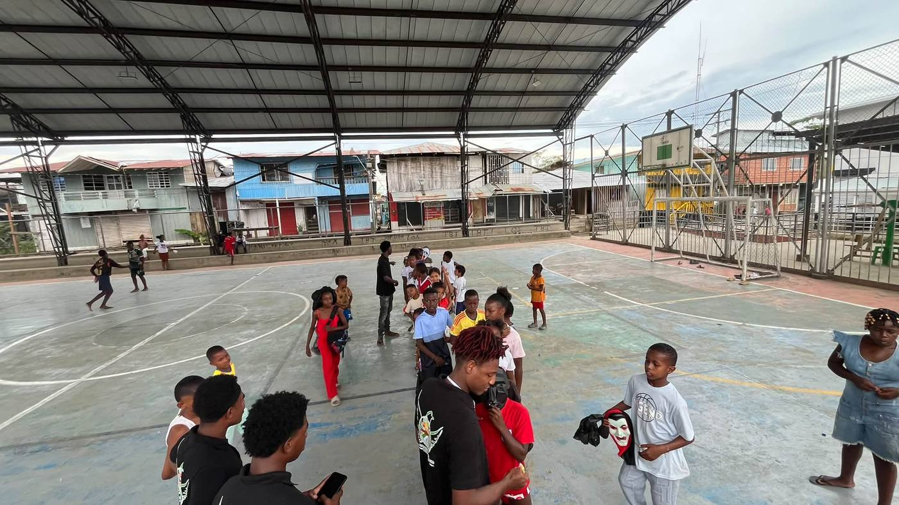
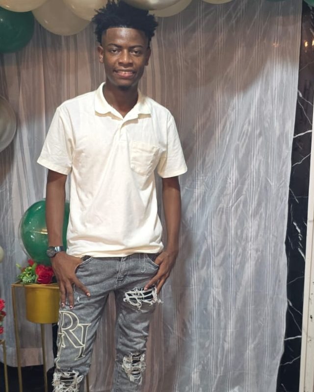

FacebookPlataforma de Juventud Riosucio
Seguir¿No ves las publicaciones? Tu navegador puede estar bloqueando el contenido de Facebook. Ábrelas directamente ↗

Somos la Plataforma Municipal de Juventud de Riosucio: el espacio donde los jóvenes del casco urbano y la ruralidad se organizan, proponen y exigen sus derechos. Saludamos desde las periferias.
 Recibimos la visita de “Del Territorio al Futuro” para la dotación de la Escuela de Tecnologías9 de noviembre de 2026
Recibimos la visita de “Del Territorio al Futuro” para la dotación de la Escuela de Tecnologías9 de noviembre de 2026 Nos formamos en primeros auxilios con Médicos del Mundo y recibimos una dotación para la plataforma6 de noviembre de 2026
Nos formamos en primeros auxilios con Médicos del Mundo y recibimos una dotación para la plataforma6 de noviembre de 2026 Alcaldía y juventudes concertan garantías para el Sistema Municipal de Juventud5 de noviembre de 2026
Alcaldía y juventudes concertan garantías para el Sistema Municipal de Juventud5 de noviembre de 2026Formación, comunicación, cuidado, ambiente e incidencia: así trabajamos por la juventud de Riosucio.
 ↗Educación · desde 2025
↗Educación · desde 2025Educando para cambiar la vida con las TIC: cerca de 100 personas formadas y seleccionada en “Del Territorio al Futuro”.
 ↗Comunicación · desde 2021
↗Comunicación · desde 2021Nuestra radio juvenil en Riosucio Estéreo 98.3 FM.

↗Salud mental ↗Nuestra sede
↗Nuestra sedeLa recuperamos con jornadas de limpieza y dotación.

↗IncidenciaMinisterios, Congreso y entidades nacionales.
Computadores, impresoras, un panel y más implementos llegarán a nuestra Escuela de Tecnologías gracias al proyecto Del Territorio al Futuro.
Leer la noticia →

Conoce a los líderes de la Junta Directiva 2026–2028. Toca un nombre para ver su perfil.

PresidentePresidente de la Plataforma · Representante Legal de la AJPMJR
Ver perfil → Jefe de Gabinete
Jefe de GabineteJefe de Gabinete y Asesor de la Plataforma · Delegado Departamental del Chocó y Vocero Nacional
Ver perfil → Vicepresidente
VicepresidenteVicepresidente de la Plataforma
Ver perfil → Vicepresidente Ejecutivo
Vicepresidente EjecutivoVicepresidente Ejecutivo de la Plataforma
Ver perfil →Normas, instancias y espacios para que los jóvenes de Riosucio participen y decidan.
Esta sección se actualiza sola: cada publicación de nuestra Página de Facebook llega aquí y alimenta las noticias, la galería, los proyectos y los indicadores.
¿No ves las publicaciones? Tu navegador puede estar bloqueando el contenido de Facebook. Ábrelas directamente ↗
Plataforma de Juventud Riosucio Chocó
Aquí aparecen nuestras publicaciones más recientes de Facebook.
Ir a nuestro FacebookCon tu donación fortalecemos la Escuela de Tecnologías, la Casa de la Juventud y las actividades de salud mental, cultura y deporte de la plataforma.
La plataforma es de todos los jóvenes de Riosucio. Participar no es solo asistir: es proponer, construir, hacer seguimiento y aportar al territorio.